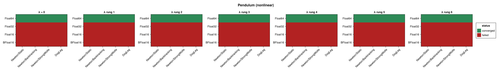
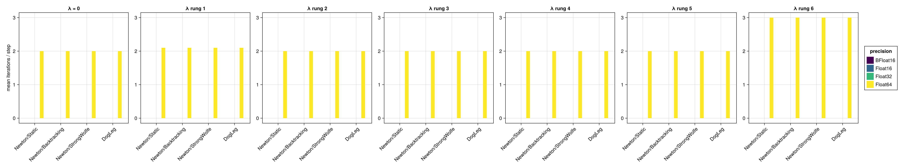
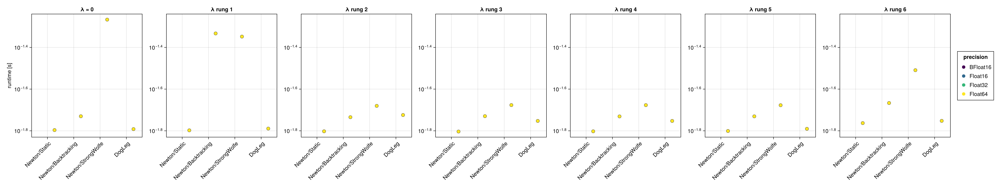
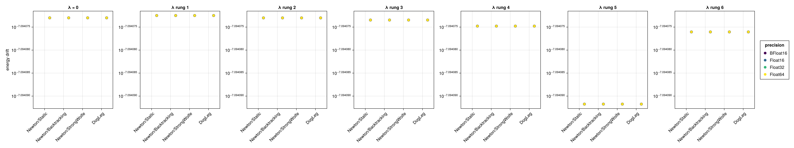
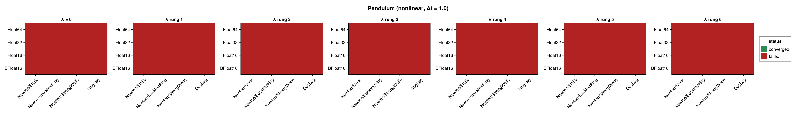
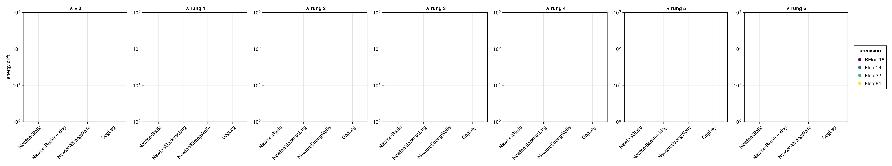

Pendulum (Nonlinear Integrator)
The mathematical pendulum benchmarked with the ShallowNet integrator (see Harmonic Oscillator (Nonlinear Integrator) for the network setup and the meaning of the regularization sweep). GeometricProblems.Pendulum provides no Lagrangian (lodeproblem) form, so its two-dimensional phase-space iodeproblem is used — the state is q = [angle, momentum], and the energy $H(\text{angle}, \text{momentum})$ is evaluated from both components. The pendulum is nonlinear, so it exercises the solves more than the harmonic oscillator. No closed-form solution is used; accuracy is assessed through the energy drift.
The figures panel by the regularization factor $\lambda$ — a rung of the $\sqrt{\varepsilon(T)}$ ladder, so one panel is a different shift at each precision; solver configurations are on the x-axis and precisions are distinguished by colour. Results are shown at $\Delta t = 0.1$ and repeated for $\Delta t = 1.0$ and $\Delta t = 10.0$ (ten steps each).
using SolverBenchmark
spec = pendulum_lode_spec(timespan = (0.0, 1.0), timestep = 0.1)
df = cached_sweep("nonlinear_pendulum_dt0.1") do
run_nonlinear_benchmark(spec; timing = :quick, max_iterations = 100,
verbose = false, quiet = true)
endConvergence
plot_convergence(df; panelcol = :regularization, title = "Pendulum (nonlinear)")
Nonlinear iterations
plot_iterations(df; panelcol = :regularization)
Run time
plot_runtime(df; panelcol = :regularization)
Energy drift
plot_energy_drift(df; panelcol = :regularization)
Discussion
- As for the harmonic oscillator, regularization is not needed. At
Float64all four solvers converge at $\lambda = 0$ and at every rung, in 2.0 iterations per step (3.0 at rung 6), conserving the energy to $8.05 \times 10^{-8}$ — to three significant figures the same drift at every value, across a ladder spanning a factor of a thousand. - The pendulum's nonlinearity means the solve needs a few more iterations per step than the (linear) oscillator.
- Only
Float64converges (28/28).Float32fails at every value of $\lambda$: every one of its 28 rows raises theSingularExceptionof the OGA initial guess's Gram solve. See Harmonic Oscillator (Nonlinear Integrator) for that mechanism. - Both 16-bit formats fail at every rung (0/28 each). The
Float16exception again comes from the OGA initial guess's Gram solve, not from the Newton Jacobian, soregularization_factorcannot reach it; atBFloat16the integrator cannot be built.
Results table
markdown_table(summary_table(df; panelcol = :regularization))| precision | solver_label | regularization | converged | iterations_mean | runtime_s | max_residual | at_tolerance | energy_drift |
|---|---|---|---|---|---|---|---|---|
| BFloat16 | Newton/Static | λ = 0 | ✗ | — | — | — | ✗ | — |
| BFloat16 | Newton/Static | λ rung 1 | ✗ | — | — | — | ✗ | — |
| BFloat16 | Newton/Static | λ rung 2 | ✗ | — | — | — | ✗ | — |
| BFloat16 | Newton/Static | λ rung 3 | ✗ | — | — | — | ✗ | — |
| BFloat16 | Newton/Static | λ rung 4 | ✗ | — | — | — | ✗ | — |
| BFloat16 | Newton/Static | λ rung 5 | ✗ | — | — | — | ✗ | — |
| BFloat16 | Newton/Static | λ rung 6 | ✗ | — | — | — | ✗ | — |
| BFloat16 | Newton/Backtracking | λ = 0 | ✗ | — | — | — | ✗ | — |
| BFloat16 | Newton/Backtracking | λ rung 1 | ✗ | — | — | — | ✗ | — |
| BFloat16 | Newton/Backtracking | λ rung 2 | ✗ | — | — | — | ✗ | — |
| BFloat16 | Newton/Backtracking | λ rung 3 | ✗ | — | — | — | ✗ | — |
| BFloat16 | Newton/Backtracking | λ rung 4 | ✗ | — | — | — | ✗ | — |
| BFloat16 | Newton/Backtracking | λ rung 5 | ✗ | — | — | — | ✗ | — |
| BFloat16 | Newton/Backtracking | λ rung 6 | ✗ | — | — | — | ✗ | — |
| BFloat16 | Newton/StrongWolfe | λ = 0 | ✗ | — | — | — | ✗ | — |
| BFloat16 | Newton/StrongWolfe | λ rung 1 | ✗ | — | — | — | ✗ | — |
| BFloat16 | Newton/StrongWolfe | λ rung 2 | ✗ | — | — | — | ✗ | — |
| BFloat16 | Newton/StrongWolfe | λ rung 3 | ✗ | — | — | — | ✗ | — |
| BFloat16 | Newton/StrongWolfe | λ rung 4 | ✗ | — | — | — | ✗ | — |
| BFloat16 | Newton/StrongWolfe | λ rung 5 | ✗ | — | — | — | ✗ | — |
| BFloat16 | Newton/StrongWolfe | λ rung 6 | ✗ | — | — | — | ✗ | — |
| BFloat16 | DogLeg | λ = 0 | ✗ | — | — | — | ✗ | — |
| BFloat16 | DogLeg | λ rung 1 | ✗ | — | — | — | ✗ | — |
| BFloat16 | DogLeg | λ rung 2 | ✗ | — | — | — | ✗ | — |
| BFloat16 | DogLeg | λ rung 3 | ✗ | — | — | — | ✗ | — |
| BFloat16 | DogLeg | λ rung 4 | ✗ | — | — | — | ✗ | — |
| BFloat16 | DogLeg | λ rung 5 | ✗ | — | — | — | ✗ | — |
| BFloat16 | DogLeg | λ rung 6 | ✗ | — | — | — | ✗ | — |
| Float16 | Newton/Static | λ = 0 | ✗ | — | — | — | ✗ | — |
| Float16 | Newton/Static | λ rung 1 | ✗ | — | — | — | ✗ | — |
| Float16 | Newton/Static | λ rung 2 | ✗ | — | — | — | ✗ | — |
| Float16 | Newton/Static | λ rung 3 | ✗ | — | — | — | ✗ | — |
| Float16 | Newton/Static | λ rung 4 | ✗ | — | — | — | ✗ | — |
| Float16 | Newton/Static | λ rung 5 | ✗ | — | — | — | ✗ | — |
| Float16 | Newton/Static | λ rung 6 | ✗ | — | — | — | ✗ | — |
| Float16 | Newton/Backtracking | λ = 0 | ✗ | — | — | — | ✗ | — |
| Float16 | Newton/Backtracking | λ rung 1 | ✗ | — | — | — | ✗ | — |
| Float16 | Newton/Backtracking | λ rung 2 | ✗ | — | — | — | ✗ | — |
| Float16 | Newton/Backtracking | λ rung 3 | ✗ | — | — | — | ✗ | — |
| Float16 | Newton/Backtracking | λ rung 4 | ✗ | — | — | — | ✗ | — |
| Float16 | Newton/Backtracking | λ rung 5 | ✗ | — | — | — | ✗ | — |
| Float16 | Newton/Backtracking | λ rung 6 | ✗ | — | — | — | ✗ | — |
| Float16 | Newton/StrongWolfe | λ = 0 | ✗ | — | — | — | ✗ | — |
| Float16 | Newton/StrongWolfe | λ rung 1 | ✗ | — | — | — | ✗ | — |
| Float16 | Newton/StrongWolfe | λ rung 2 | ✗ | — | — | — | ✗ | — |
| Float16 | Newton/StrongWolfe | λ rung 3 | ✗ | — | — | — | ✗ | — |
| Float16 | Newton/StrongWolfe | λ rung 4 | ✗ | — | — | — | ✗ | — |
| Float16 | Newton/StrongWolfe | λ rung 5 | ✗ | — | — | — | ✗ | — |
| Float16 | Newton/StrongWolfe | λ rung 6 | ✗ | — | — | — | ✗ | — |
| Float16 | DogLeg | λ = 0 | ✗ | — | — | — | ✗ | — |
| Float16 | DogLeg | λ rung 1 | ✗ | — | — | — | ✗ | — |
| Float16 | DogLeg | λ rung 2 | ✗ | — | — | — | ✗ | — |
| Float16 | DogLeg | λ rung 3 | ✗ | — | — | — | ✗ | — |
| Float16 | DogLeg | λ rung 4 | ✗ | — | — | — | ✗ | — |
| Float16 | DogLeg | λ rung 5 | ✗ | — | — | — | ✗ | — |
| Float16 | DogLeg | λ rung 6 | ✗ | — | — | — | ✗ | — |
| Float32 | Newton/Static | λ = 0 | ✗ | — | — | — | ✗ | — |
| Float32 | Newton/Static | λ rung 1 | ✗ | — | — | — | ✗ | — |
| Float32 | Newton/Static | λ rung 2 | ✗ | — | — | — | ✗ | — |
| Float32 | Newton/Static | λ rung 3 | ✗ | — | — | — | ✗ | — |
| Float32 | Newton/Static | λ rung 4 | ✗ | — | — | — | ✗ | — |
| Float32 | Newton/Static | λ rung 5 | ✗ | — | — | — | ✗ | — |
| Float32 | Newton/Static | λ rung 6 | ✗ | — | — | — | ✗ | — |
| Float32 | Newton/Backtracking | λ = 0 | ✗ | — | — | — | ✗ | — |
| Float32 | Newton/Backtracking | λ rung 1 | ✗ | — | — | — | ✗ | — |
| Float32 | Newton/Backtracking | λ rung 2 | ✗ | — | — | — | ✗ | — |
| Float32 | Newton/Backtracking | λ rung 3 | ✗ | — | — | — | ✗ | — |
| Float32 | Newton/Backtracking | λ rung 4 | ✗ | — | — | — | ✗ | — |
| Float32 | Newton/Backtracking | λ rung 5 | ✗ | — | — | — | ✗ | — |
| Float32 | Newton/Backtracking | λ rung 6 | ✗ | — | — | — | ✗ | — |
| Float32 | Newton/StrongWolfe | λ = 0 | ✗ | — | — | — | ✗ | — |
| Float32 | Newton/StrongWolfe | λ rung 1 | ✗ | — | — | — | ✗ | — |
| Float32 | Newton/StrongWolfe | λ rung 2 | ✗ | — | — | — | ✗ | — |
| Float32 | Newton/StrongWolfe | λ rung 3 | ✗ | — | — | — | ✗ | — |
| Float32 | Newton/StrongWolfe | λ rung 4 | ✗ | — | — | — | ✗ | — |
| Float32 | Newton/StrongWolfe | λ rung 5 | ✗ | — | — | — | ✗ | — |
| Float32 | Newton/StrongWolfe | λ rung 6 | ✗ | — | — | — | ✗ | — |
| Float32 | DogLeg | λ = 0 | ✗ | — | — | — | ✗ | — |
| Float32 | DogLeg | λ rung 1 | ✗ | — | — | — | ✗ | — |
| Float32 | DogLeg | λ rung 2 | ✗ | — | — | — | ✗ | — |
| Float32 | DogLeg | λ rung 3 | ✗ | — | — | — | ✗ | — |
| Float32 | DogLeg | λ rung 4 | ✗ | — | — | — | ✗ | — |
| Float32 | DogLeg | λ rung 5 | ✗ | — | — | — | ✗ | — |
| Float32 | DogLeg | λ rung 6 | ✗ | — | — | — | ✗ | — |
| Float64 | Newton/Static | λ = 0 | ✓ | 2 | 0.016 | 3.26e-14 | ✓ | 8.05e-08 |
| Float64 | Newton/Static | λ rung 1 | ✓ | 2.1 | 0.0159 | 3.97e-14 | ✓ | 8.05e-08 |
| Float64 | Newton/Static | λ rung 2 | ✓ | 2 | 0.0158 | 2.64e-14 | ✓ | 8.05e-08 |
| Float64 | Newton/Static | λ rung 3 | ✓ | 2 | 0.0157 | 2.76e-14 | ✓ | 8.05e-08 |
| Float64 | Newton/Static | λ rung 4 | ✓ | 2 | 0.0158 | 4.57e-14 | ✓ | 8.05e-08 |
| Float64 | Newton/Static | λ rung 5 | ✓ | 2 | 0.0158 | 3.41e-14 | ✓ | 8.05e-08 |
| Float64 | Newton/Static | λ rung 6 | ✓ | 3 | 0.0173 | 4.25e-14 | ✓ | 8.05e-08 |
| Float64 | Newton/Backtracking | λ = 0 | ✓ | 2 | 0.0186 | 3.26e-14 | ✓ | 8.05e-08 |
| Float64 | Newton/Backtracking | λ rung 1 | ✓ | 2.1 | 0.0465 | 3.97e-14 | ✓ | 8.05e-08 |
| Float64 | Newton/Backtracking | λ rung 2 | ✓ | 2 | 0.0184 | 2.64e-14 | ✓ | 8.05e-08 |
| Float64 | Newton/Backtracking | λ rung 3 | ✓ | 2 | 0.0186 | 2.76e-14 | ✓ | 8.05e-08 |
| Float64 | Newton/Backtracking | λ rung 4 | ✓ | 2 | 0.0186 | 4.57e-14 | ✓ | 8.05e-08 |
| Float64 | Newton/Backtracking | λ rung 5 | ✓ | 2 | 0.0186 | 3.41e-14 | ✓ | 8.05e-08 |
| Float64 | Newton/Backtracking | λ rung 6 | ✓ | 3 | 0.0215 | 4.25e-14 | ✓ | 8.05e-08 |
| Float64 | Newton/StrongWolfe | λ = 0 | ✓ | 2 | 0.0541 | 3.26e-14 | ✓ | 8.05e-08 |
| Float64 | Newton/StrongWolfe | λ rung 1 | ✓ | 2.1 | 0.0449 | 3.97e-14 | ✓ | 8.05e-08 |
| Float64 | Newton/StrongWolfe | λ rung 2 | ✓ | 2 | 0.0209 | 2.64e-14 | ✓ | 8.05e-08 |
| Float64 | Newton/StrongWolfe | λ rung 3 | ✓ | 2 | 0.0211 | 2.76e-14 | ✓ | 8.05e-08 |
| Float64 | Newton/StrongWolfe | λ rung 4 | ✓ | 2 | 0.021 | 4.57e-14 | ✓ | 8.05e-08 |
| Float64 | Newton/StrongWolfe | λ rung 5 | ✓ | 2 | 0.021 | 3.41e-14 | ✓ | 8.05e-08 |
| Float64 | Newton/StrongWolfe | λ rung 6 | ✓ | 3 | 0.031 | 4.25e-14 | ✓ | 8.05e-08 |
| Float64 | DogLeg | λ = 0 | ✓ | 2 | 0.0161 | 3.26e-14 | ✓ | 8.05e-08 |
| Float64 | DogLeg | λ rung 1 | ✓ | 2.1 | 0.0162 | 3.97e-14 | ✓ | 8.05e-08 |
| Float64 | DogLeg | λ rung 2 | ✓ | 2 | 0.0189 | 2.64e-14 | ✓ | 8.05e-08 |
| Float64 | DogLeg | λ rung 3 | ✓ | 2 | 0.0177 | 2.76e-14 | ✓ | 8.05e-08 |
| Float64 | DogLeg | λ rung 4 | ✓ | 2 | 0.0177 | 4.57e-14 | ✓ | 8.05e-08 |
| Float64 | DogLeg | λ rung 5 | ✓ | 2 | 0.0162 | 3.41e-14 | ✓ | 8.05e-08 |
| Float64 | DogLeg | λ rung 6 | ✓ | 3 | 0.0177 | 4.25e-14 | ✓ | 8.05e-08 |
Coarse time step (Δt = 1.0)
spec1 = pendulum_lode_spec(timespan = (0.0, 10.0), timestep = 1.0)
df1 = cached_sweep("nonlinear_pendulum_dt1.0") do
run_nonlinear_benchmark(spec1; timing = :quick, max_iterations = 100,
verbose = false, quiet = true)
endplot_convergence(df1; panelcol = :regularization, title = "Pendulum (nonlinear, Δt = 1.0)")
plot_energy_drift(df1; panelcol = :regularization)
markdown_table(summary_table(df1; panelcol = :regularization))| precision | solver_label | regularization | converged | iterations_mean | runtime_s | max_residual |
|---|---|---|---|---|---|---|
| BFloat16 | Newton/Static | λ = 0 | ✗ | — | — | — |
| BFloat16 | Newton/Static | λ rung 1 | ✗ | — | — | — |
| BFloat16 | Newton/Static | λ rung 2 | ✗ | — | — | — |
| BFloat16 | Newton/Static | λ rung 3 | ✗ | — | — | — |
| BFloat16 | Newton/Static | λ rung 4 | ✗ | — | — | — |
| BFloat16 | Newton/Static | λ rung 5 | ✗ | — | — | — |
| BFloat16 | Newton/Static | λ rung 6 | ✗ | — | — | — |
| BFloat16 | Newton/Backtracking | λ = 0 | ✗ | — | — | — |
| BFloat16 | Newton/Backtracking | λ rung 1 | ✗ | — | — | — |
| BFloat16 | Newton/Backtracking | λ rung 2 | ✗ | — | — | — |
| BFloat16 | Newton/Backtracking | λ rung 3 | ✗ | — | — | — |
| BFloat16 | Newton/Backtracking | λ rung 4 | ✗ | — | — | — |
| BFloat16 | Newton/Backtracking | λ rung 5 | ✗ | — | — | — |
| BFloat16 | Newton/Backtracking | λ rung 6 | ✗ | — | — | — |
| BFloat16 | Newton/StrongWolfe | λ = 0 | ✗ | — | — | — |
| BFloat16 | Newton/StrongWolfe | λ rung 1 | ✗ | — | — | — |
| BFloat16 | Newton/StrongWolfe | λ rung 2 | ✗ | — | — | — |
| BFloat16 | Newton/StrongWolfe | λ rung 3 | ✗ | — | — | — |
| BFloat16 | Newton/StrongWolfe | λ rung 4 | ✗ | — | — | — |
| BFloat16 | Newton/StrongWolfe | λ rung 5 | ✗ | — | — | — |
| BFloat16 | Newton/StrongWolfe | λ rung 6 | ✗ | — | — | — |
| BFloat16 | DogLeg | λ = 0 | ✗ | — | — | — |
| BFloat16 | DogLeg | λ rung 1 | ✗ | — | — | — |
| BFloat16 | DogLeg | λ rung 2 | ✗ | — | — | — |
| BFloat16 | DogLeg | λ rung 3 | ✗ | — | — | — |
| BFloat16 | DogLeg | λ rung 4 | ✗ | — | — | — |
| BFloat16 | DogLeg | λ rung 5 | ✗ | — | — | — |
| BFloat16 | DogLeg | λ rung 6 | ✗ | — | — | — |
| Float16 | Newton/Static | λ = 0 | ✗ | — | — | — |
| Float16 | Newton/Static | λ rung 1 | ✗ | — | — | — |
| Float16 | Newton/Static | λ rung 2 | ✗ | — | — | — |
| Float16 | Newton/Static | λ rung 3 | ✗ | — | — | — |
| Float16 | Newton/Static | λ rung 4 | ✗ | — | — | — |
| Float16 | Newton/Static | λ rung 5 | ✗ | — | — | — |
| Float16 | Newton/Static | λ rung 6 | ✗ | — | — | — |
| Float16 | Newton/Backtracking | λ = 0 | ✗ | — | — | — |
| Float16 | Newton/Backtracking | λ rung 1 | ✗ | — | — | — |
| Float16 | Newton/Backtracking | λ rung 2 | ✗ | — | — | — |
| Float16 | Newton/Backtracking | λ rung 3 | ✗ | — | — | — |
| Float16 | Newton/Backtracking | λ rung 4 | ✗ | — | — | — |
| Float16 | Newton/Backtracking | λ rung 5 | ✗ | — | — | — |
| Float16 | Newton/Backtracking | λ rung 6 | ✗ | — | — | — |
| Float16 | Newton/StrongWolfe | λ = 0 | ✗ | — | — | — |
| Float16 | Newton/StrongWolfe | λ rung 1 | ✗ | — | — | — |
| Float16 | Newton/StrongWolfe | λ rung 2 | ✗ | — | — | — |
| Float16 | Newton/StrongWolfe | λ rung 3 | ✗ | — | — | — |
| Float16 | Newton/StrongWolfe | λ rung 4 | ✗ | — | — | — |
| Float16 | Newton/StrongWolfe | λ rung 5 | ✗ | — | — | — |
| Float16 | Newton/StrongWolfe | λ rung 6 | ✗ | — | — | — |
| Float16 | DogLeg | λ = 0 | ✗ | — | — | — |
| Float16 | DogLeg | λ rung 1 | ✗ | — | — | — |
| Float16 | DogLeg | λ rung 2 | ✗ | — | — | — |
| Float16 | DogLeg | λ rung 3 | ✗ | — | — | — |
| Float16 | DogLeg | λ rung 4 | ✗ | — | — | — |
| Float16 | DogLeg | λ rung 5 | ✗ | — | — | — |
| Float16 | DogLeg | λ rung 6 | ✗ | — | — | — |
| Float32 | Newton/Static | λ = 0 | ✗ | — | — | — |
| Float32 | Newton/Static | λ rung 1 | ✗ | — | — | — |
| Float32 | Newton/Static | λ rung 2 | ✗ | — | — | — |
| Float32 | Newton/Static | λ rung 3 | ✗ | — | — | — |
| Float32 | Newton/Static | λ rung 4 | ✗ | — | — | — |
| Float32 | Newton/Static | λ rung 5 | ✗ | — | — | — |
| Float32 | Newton/Static | λ rung 6 | ✗ | — | — | — |
| Float32 | Newton/Backtracking | λ = 0 | ✗ | — | — | — |
| Float32 | Newton/Backtracking | λ rung 1 | ✗ | — | — | — |
| Float32 | Newton/Backtracking | λ rung 2 | ✗ | — | — | — |
| Float32 | Newton/Backtracking | λ rung 3 | ✗ | — | — | — |
| Float32 | Newton/Backtracking | λ rung 4 | ✗ | — | — | — |
| Float32 | Newton/Backtracking | λ rung 5 | ✗ | — | — | — |
| Float32 | Newton/Backtracking | λ rung 6 | ✗ | — | — | — |
| Float32 | Newton/StrongWolfe | λ = 0 | ✗ | — | — | — |
| Float32 | Newton/StrongWolfe | λ rung 1 | ✗ | — | — | — |
| Float32 | Newton/StrongWolfe | λ rung 2 | ✗ | — | — | — |
| Float32 | Newton/StrongWolfe | λ rung 3 | ✗ | — | — | — |
| Float32 | Newton/StrongWolfe | λ rung 4 | ✗ | — | — | — |
| Float32 | Newton/StrongWolfe | λ rung 5 | ✗ | — | — | — |
| Float32 | Newton/StrongWolfe | λ rung 6 | ✗ | — | — | — |
| Float32 | DogLeg | λ = 0 | ✗ | — | — | — |
| Float32 | DogLeg | λ rung 1 | ✗ | — | — | — |
| Float32 | DogLeg | λ rung 2 | ✗ | — | — | — |
| Float32 | DogLeg | λ rung 3 | ✗ | — | — | — |
| Float32 | DogLeg | λ rung 4 | ✗ | — | — | — |
| Float32 | DogLeg | λ rung 5 | ✗ | — | — | — |
| Float32 | DogLeg | λ rung 6 | ✗ | — | — | — |
| Float64 | Newton/Static | λ = 0 | ✗ | 29.7 | 0.0867 | 1.27e+10 |
| Float64 | Newton/Static | λ rung 1 | ✗ | 18.8 | 0.052 | 1.46e+07 |
| Float64 | Newton/Static | λ rung 2 | ✗ | 27.1 | 0.0839 | 5.75e+14 |
| Float64 | Newton/Static | λ rung 3 | ✗ | 40.2 | 0.0979 | 7.9e+13 |
| Float64 | Newton/Static | λ rung 4 | ✗ | 42 | 0.101 | 4.63e+05 |
| Float64 | Newton/Static | λ rung 5 | ✗ | 14.2 | 0.045 | 1.6e+13 |
| Float64 | Newton/Static | λ rung 6 | ✗ | 23.3 | 0.0634 | 1.28e-06 |
| Float64 | Newton/Backtracking | λ = 0 | ✗ | 37.1 | 0.166 | 0.46 |
| Float64 | Newton/Backtracking | λ rung 1 | ✗ | 40.4 | 0.186 | 0.0523 |
| Float64 | Newton/Backtracking | λ rung 2 | ✗ | 33.5 | 0.146 | 0.00917 |
| Float64 | Newton/Backtracking | λ rung 3 | ✗ | 42.9 | 0.187 | 0.064 |
| Float64 | Newton/Backtracking | λ rung 4 | ✗ | 39.9 | 0.183 | 0.203 |
| Float64 | Newton/Backtracking | λ rung 5 | ✗ | 46.9 | 0.209 | 0.293 |
| Float64 | Newton/Backtracking | λ rung 6 | ✗ | 34.4 | 0.159 | 0.256 |
| Float64 | Newton/StrongWolfe | λ = 0 | ✗ | 35.4 | 0.242 | 0.18 |
| Float64 | Newton/StrongWolfe | λ rung 1 | ✗ | 32.9 | 0.229 | 0.473 |
| Float64 | Newton/StrongWolfe | λ rung 2 | ✗ | 35.2 | 0.241 | 0.0938 |
| Float64 | Newton/StrongWolfe | λ rung 3 | ✗ | 40.4 | 0.276 | 0.0878 |
| Float64 | Newton/StrongWolfe | λ rung 4 | ✗ | 37.2 | 0.253 | 0.148 |
| Float64 | Newton/StrongWolfe | λ rung 5 | ✗ | 32.3 | 0.215 | 0.282 |
| Float64 | Newton/StrongWolfe | λ rung 6 | ✗ | 30.5 | 0.202 | 0.106 |
| Float64 | DogLeg | λ = 0 | ✗ | 20.2 | 0.0696 | 0.000929 |
| Float64 | DogLeg | λ rung 1 | ✗ | 31.3 | 0.0944 | 0.00264 |
| Float64 | DogLeg | λ rung 2 | ✗ | 36.1 | 0.0894 | 0.00666 |
| Float64 | DogLeg | λ rung 3 | ✗ | 45 | 0.106 | 0.0287 |
| Float64 | DogLeg | λ rung 4 | ✗ | 44.5 | 0.116 | 0.00823 |
| Float64 | DogLeg | λ rung 5 | ✗ | 37.2 | 0.0997 | 0.00409 |
| Float64 | DogLeg | λ rung 6 | ✗ | 39.8 | 0.102 | 0.012 |
Large time step (Δt = 10.0)
spec10 = pendulum_lode_spec(timespan = (0.0, 100.0), timestep = 10.0)
df10 = cached_sweep("nonlinear_pendulum_dt10.0") do
run_nonlinear_benchmark(spec10; timing = :quick, max_iterations = 100,
verbose = false, quiet = true)
endplot_convergence(df10; panelcol = :regularization, title = "Pendulum (nonlinear, Δt = 10.0)")markdown_table(summary_table(df10; panelcol = :regularization))| precision | solver_label | regularization | converged | iterations_mean | runtime_s | max_residual |
|---|---|---|---|---|---|---|
| BFloat16 | Newton/Static | λ = 0 | ✗ | — | — | — |
| BFloat16 | Newton/Static | λ rung 1 | ✗ | — | — | — |
| BFloat16 | Newton/Static | λ rung 2 | ✗ | — | — | — |
| BFloat16 | Newton/Static | λ rung 3 | ✗ | — | — | — |
| BFloat16 | Newton/Static | λ rung 4 | ✗ | — | — | — |
| BFloat16 | Newton/Static | λ rung 5 | ✗ | — | — | — |
| BFloat16 | Newton/Static | λ rung 6 | ✗ | — | — | — |
| BFloat16 | Newton/Backtracking | λ = 0 | ✗ | — | — | — |
| BFloat16 | Newton/Backtracking | λ rung 1 | ✗ | — | — | — |
| BFloat16 | Newton/Backtracking | λ rung 2 | ✗ | — | — | — |
| BFloat16 | Newton/Backtracking | λ rung 3 | ✗ | — | — | — |
| BFloat16 | Newton/Backtracking | λ rung 4 | ✗ | — | — | — |
| BFloat16 | Newton/Backtracking | λ rung 5 | ✗ | — | — | — |
| BFloat16 | Newton/Backtracking | λ rung 6 | ✗ | — | — | — |
| BFloat16 | Newton/StrongWolfe | λ = 0 | ✗ | — | — | — |
| BFloat16 | Newton/StrongWolfe | λ rung 1 | ✗ | — | — | — |
| BFloat16 | Newton/StrongWolfe | λ rung 2 | ✗ | — | — | — |
| BFloat16 | Newton/StrongWolfe | λ rung 3 | ✗ | — | — | — |
| BFloat16 | Newton/StrongWolfe | λ rung 4 | ✗ | — | — | — |
| BFloat16 | Newton/StrongWolfe | λ rung 5 | ✗ | — | — | — |
| BFloat16 | Newton/StrongWolfe | λ rung 6 | ✗ | — | — | — |
| BFloat16 | DogLeg | λ = 0 | ✗ | — | — | — |
| BFloat16 | DogLeg | λ rung 1 | ✗ | — | — | — |
| BFloat16 | DogLeg | λ rung 2 | ✗ | — | — | — |
| BFloat16 | DogLeg | λ rung 3 | ✗ | — | — | — |
| BFloat16 | DogLeg | λ rung 4 | ✗ | — | — | — |
| BFloat16 | DogLeg | λ rung 5 | ✗ | — | — | — |
| BFloat16 | DogLeg | λ rung 6 | ✗ | — | — | — |
| Float16 | Newton/Static | λ = 0 | ✗ | — | — | — |
| Float16 | Newton/Static | λ rung 1 | ✗ | — | — | — |
| Float16 | Newton/Static | λ rung 2 | ✗ | — | — | — |
| Float16 | Newton/Static | λ rung 3 | ✗ | — | — | — |
| Float16 | Newton/Static | λ rung 4 | ✗ | — | — | — |
| Float16 | Newton/Static | λ rung 5 | ✗ | — | — | — |
| Float16 | Newton/Static | λ rung 6 | ✗ | — | — | — |
| Float16 | Newton/Backtracking | λ = 0 | ✗ | — | — | — |
| Float16 | Newton/Backtracking | λ rung 1 | ✗ | — | — | — |
| Float16 | Newton/Backtracking | λ rung 2 | ✗ | — | — | — |
| Float16 | Newton/Backtracking | λ rung 3 | ✗ | — | — | — |
| Float16 | Newton/Backtracking | λ rung 4 | ✗ | — | — | — |
| Float16 | Newton/Backtracking | λ rung 5 | ✗ | — | — | — |
| Float16 | Newton/Backtracking | λ rung 6 | ✗ | — | — | — |
| Float16 | Newton/StrongWolfe | λ = 0 | ✗ | — | — | — |
| Float16 | Newton/StrongWolfe | λ rung 1 | ✗ | — | — | — |
| Float16 | Newton/StrongWolfe | λ rung 2 | ✗ | — | — | — |
| Float16 | Newton/StrongWolfe | λ rung 3 | ✗ | — | — | — |
| Float16 | Newton/StrongWolfe | λ rung 4 | ✗ | — | — | — |
| Float16 | Newton/StrongWolfe | λ rung 5 | ✗ | — | — | — |
| Float16 | Newton/StrongWolfe | λ rung 6 | ✗ | — | — | — |
| Float16 | DogLeg | λ = 0 | ✗ | — | — | — |
| Float16 | DogLeg | λ rung 1 | ✗ | — | — | — |
| Float16 | DogLeg | λ rung 2 | ✗ | — | — | — |
| Float16 | DogLeg | λ rung 3 | ✗ | — | — | — |
| Float16 | DogLeg | λ rung 4 | ✗ | — | — | — |
| Float16 | DogLeg | λ rung 5 | ✗ | — | — | — |
| Float16 | DogLeg | λ rung 6 | ✗ | — | — | — |
| Float32 | Newton/Static | λ = 0 | ✗ | — | — | — |
| Float32 | Newton/Static | λ rung 1 | ✗ | — | — | — |
| Float32 | Newton/Static | λ rung 2 | ✗ | — | — | — |
| Float32 | Newton/Static | λ rung 3 | ✗ | — | — | — |
| Float32 | Newton/Static | λ rung 4 | ✗ | — | — | — |
| Float32 | Newton/Static | λ rung 5 | ✗ | — | — | — |
| Float32 | Newton/Static | λ rung 6 | ✗ | 25.6 | 0.104 | 138 |
| Float32 | Newton/Backtracking | λ = 0 | ✗ | 11.4 | 0.0822 | 83 |
| Float32 | Newton/Backtracking | λ rung 1 | ✗ | — | — | — |
| Float32 | Newton/Backtracking | λ rung 2 | ✗ | 8.8 | 0.0545 | 83 |
| Float32 | Newton/Backtracking | λ rung 3 | ✗ | 11.4 | 0.0481 | 83 |
| Float32 | Newton/Backtracking | λ rung 4 | ✗ | 12.7 | 0.0537 | 83.1 |
| Float32 | Newton/Backtracking | λ rung 5 | ✗ | 10.8 | 0.0538 | 83.1 |
| Float32 | Newton/Backtracking | λ rung 6 | ✗ | 14.2 | 0.0567 | 83 |
| Float32 | Newton/StrongWolfe | λ = 0 | ✗ | 15.1 | 0.131 | 82.4 |
| Float32 | Newton/StrongWolfe | λ rung 1 | ✗ | — | — | — |
| Float32 | Newton/StrongWolfe | λ rung 2 | ✗ | 10.6 | 0.101 | 82.4 |
| Float32 | Newton/StrongWolfe | λ rung 3 | ✗ | — | — | — |
| Float32 | Newton/StrongWolfe | λ rung 4 | ✗ | — | — | — |
| Float32 | Newton/StrongWolfe | λ rung 5 | ✗ | 11.4 | 0.0672 | 82.4 |
| Float32 | Newton/StrongWolfe | λ rung 6 | ✗ | — | — | — |
| Float32 | DogLeg | λ = 0 | ✗ | 19 | 0.0429 | 84.1 |
| Float32 | DogLeg | λ rung 1 | ✗ | 26.8 | 0.0634 | 84.1 |
| Float32 | DogLeg | λ rung 2 | ✗ | 22.7 | 0.0482 | 84.1 |
| Float32 | DogLeg | λ rung 3 | ✗ | 18.5 | 0.0612 | 84.1 |
| Float32 | DogLeg | λ rung 4 | ✗ | 19.2 | 0.0602 | 84.1 |
| Float32 | DogLeg | λ rung 5 | ✗ | 17.1 | 0.0464 | 84.1 |
| Float32 | DogLeg | λ rung 6 | ✗ | 22.7 | 0.0553 | 84.1 |
| Float64 | Newton/Static | λ = 0 | ✗ | 59.2 | 1.03 | 2.28e+10 |
| Float64 | Newton/Static | λ rung 1 | ✗ | 59.5 | 0.198 | 2.08e+12 |
| Float64 | Newton/Static | λ rung 2 | ✗ | 49.8 | 0.147 | 2.41e+09 |
| Float64 | Newton/Static | λ rung 3 | ✗ | 54.8 | 0.107 | 2.2e+12 |
| Float64 | Newton/Static | λ rung 4 | ✗ | 50.9 | 0.149 | 1.59e+09 |
| Float64 | Newton/Static | λ rung 5 | ✗ | 53.3 | 0.115 | 2.66e+25 |
| Float64 | Newton/Static | λ rung 6 | ✗ | 57.4 | 0.136 | 1.33e+17 |
| Float64 | Newton/Backtracking | λ = 0 | ✗ | 65.4 | 0.389 | 6.17e+04 |
| Float64 | Newton/Backtracking | λ rung 1 | ✗ | 68.1 | 0.232 | 7.11e+03 |
| Float64 | Newton/Backtracking | λ rung 2 | ✗ | 33.8 | 0.362 | 5.09e+17 |
| Float64 | Newton/Backtracking | λ rung 3 | ✗ | 79.2 | 0.328 | 5.75e+04 |
| Float64 | Newton/Backtracking | λ rung 4 | ✗ | 65.5 | 0.338 | 4.64e+16 |
| Float64 | Newton/Backtracking | λ rung 5 | ✗ | 77.1 | 0.327 | 3.53e+03 |
| Float64 | Newton/Backtracking | λ rung 6 | ✗ | 61 | 0.273 | 8.63e+04 |
| Float64 | Newton/StrongWolfe | λ = 0 | ✗ | 64.9 | 0.348 | 1.34e+03 |
| Float64 | Newton/StrongWolfe | λ rung 1 | ✗ | 26.8 | 0.281 | 1.66e+17 |
| Float64 | Newton/StrongWolfe | λ rung 2 | ✗ | 79.3 | 0.578 | 1.58e+03 |
| Float64 | Newton/StrongWolfe | λ rung 3 | ✗ | 65.9 | 0.626 | 538 |
| Float64 | Newton/StrongWolfe | λ rung 4 | ✗ | 67.9 | 0.48 | 343 |
| Float64 | Newton/StrongWolfe | λ rung 5 | ✗ | 74.3 | 0.498 | 679 |
| Float64 | Newton/StrongWolfe | λ rung 6 | ✗ | 65.2 | 0.453 | 890 |
| Float64 | DogLeg | λ = 0 | ✗ | 87.9 | 0.212 | 570 |
| Float64 | DogLeg | λ rung 1 | ✗ | 71.5 | 0.169 | 1.14e+03 |
| Float64 | DogLeg | λ rung 2 | ✗ | 74.8 | 0.152 | 946 |
| Float64 | DogLeg | λ rung 3 | ✗ | 74.6 | 0.174 | 4.35e+04 |
| Float64 | DogLeg | λ rung 4 | ✗ | 71.6 | 0.181 | 9.03e+03 |
| Float64 | DogLeg | λ rung 5 | ✗ | 71.2 | 0.16 | 154 |
| Float64 | DogLeg | λ rung 6 | ✗ | 76.4 | 0.156 | 98.8 |